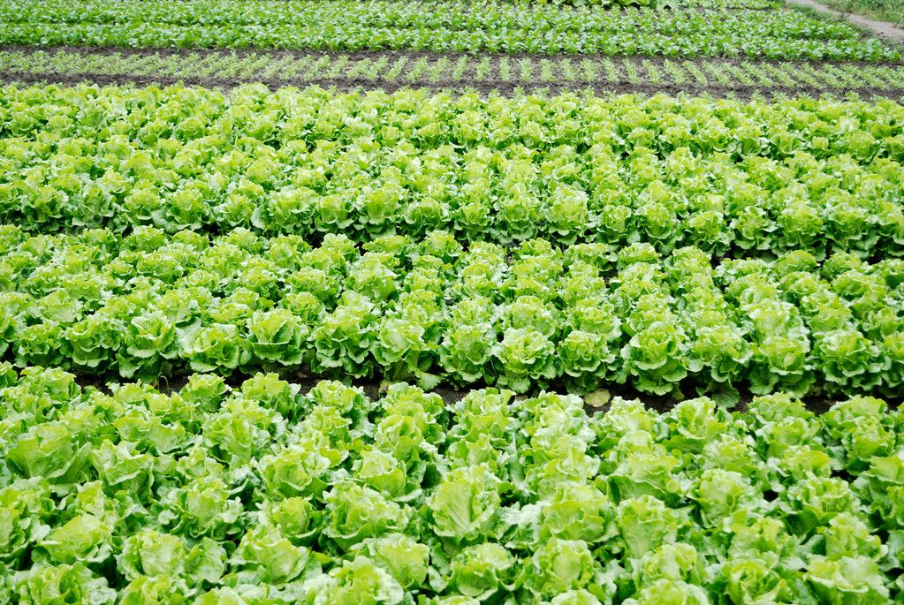

FarmConnect helps farmers sell their harvest directly to shops, restaurants, and wholesalers without middlemen.

Farmers can sell their harvest at fair market prices.
Buyers can connect directly with farmers without collectors.
Restaurants and shops can access fresh produce directly.